目录
产品简介与能做什么 安装与首次启动 账户设置：填写 API Key 认识主界面 上传文献并启动智能处理 管理文件夹与文献卡片 工具箱：独立 PDF 工具 浏览器式标签阅读：分组与自动休眠 进入协同阅读工作区 从纸质批注到软件四色标注 PPT 视窗与双向同步 AI 伴读问答 划词实时翻译 自动分类、论文脉络与万能搜索 提示词管理 主题、语言与个性化 常见问题与故障排除 附录：快捷键与处理产物
CHAPTER 01 产品简介与能做什么Paperfect 是一款安装在本机的桌面软件，面向研究生、科研人员与需要精读英文论文的师生。它把纸面上「画高亮、画波浪线、贴便签、对着 PPT 讲图」这一套阅读习惯，搬进同一个窗口：本地完成解析、翻译、批注、演示文稿生成与问答。
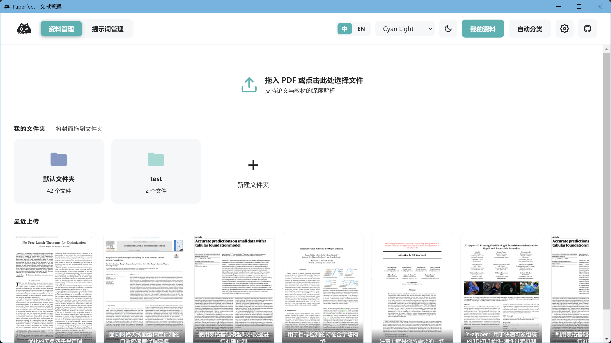
图 1 软件首页「资料管理」：顶部切换模块，中部拖入 PDF，下方是文件夹与最近文献封面。
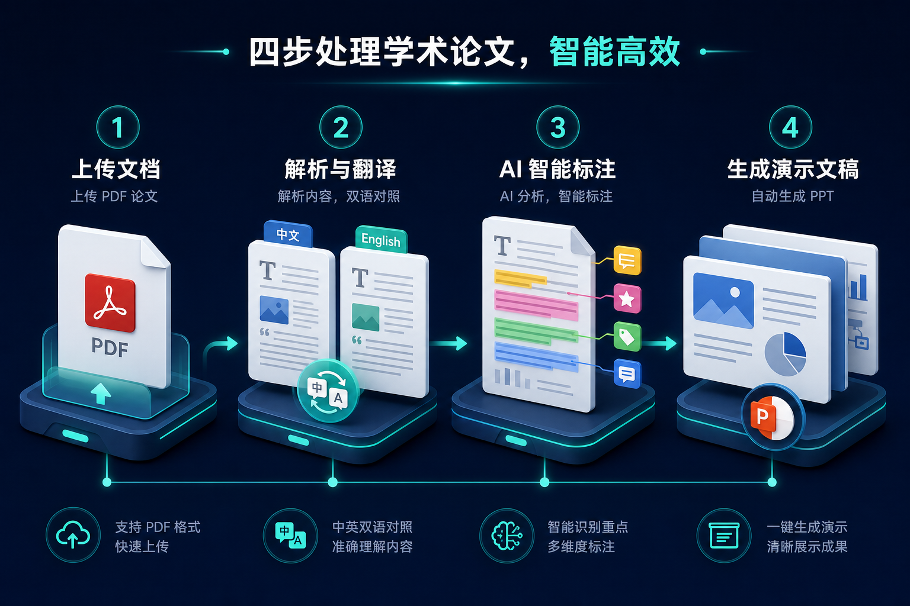
图 2 论文进入系统后的四段流水线：上传 → 解析翻译 → 智能批注 → 生成演示文稿
1. 文献库管理
以封面卡片管理 PDF。支持文件夹归类、拖拽归档、检索、按期刊分区与关键词筛选。
2. 版式保留翻译
生成尽量保持原排版的双语/中文对照 PDF，公式与图表位置不被打散。
3. 四色 AI 批注
自动在原文上标出局限、创新、方法指标，并在页边给出段落级总结。
4. PPT 与 PDF 对读
把论文图表与结构转成可编辑幻灯片，翻页时 PDF 同步跳到对应出处。
5. 知识库问答
基于解析后的文献内容提问，可指定页码，适合归纳贡献、复述方法、核对实验设置。
6. 划词即时翻译
在 PDF 中划选难句，右侧即时给出译文，不打断当前阅读位置。
使用前请理解的一点
解析、翻译、批注、PPT 与问答都需要访问您配置的大模型 API。软件本体可离线打开界面，但智能能力依赖网络与有效的 API Key。文献文件始终保存在本机工作目录中。
CHAPTER 02 安装与首次启动交付介质为 Windows 安装包。安装完成后无需再安装 Python 或 Node.js，运行时已内置。
2.1 系统要求
项目 要求
操作系统 Windows 10 或 Windows 11（64 位） 。不支持 Windows 7/8，不保证 Windows Server 精简环境。处理器 / 架构 仅 x64。未覆盖 ARM 版 Windows。 内存 建议 8 GB 及以上。长论文解析时更稳。 磁盘 程序安装约 400–600 MB；另需空间存放 PDF、翻译件、PPT 与缓存。 网络 需能访问所配置的大模型 API 地址。 其它 无需自备 Python / Node.js。
2.2 安装步骤
双击安装包 Paperfect-Setup-2.0.0.exe 。
按向导选择安装目录（允许自定义路径）。
完成安装后，从桌面快捷方式或「开始菜单 → Paperfect」启动。
首次启动可能需要 数十秒到 1–2 分钟 （后台引擎解压与服务拉起）。请等待主窗口出现，不要反复双击。
看到「资料管理」主界面后，先进入账户设置，填写 API Key，再上传文献。
关于卸载
通过 Windows「设置 → 应用 → 已安装的应用」卸载即可。默认不会清空 您的文献数据。数据通常位于安装目录下的工作空间（如 resources/dist_portable/data）。重装前如需备份，请复制整个 data 目录。
CHAPTER 03 账户设置：填写 API Key没有有效 API Key 时，界面可以打开，但上传后无法完成解析。这是使用本软件的第一步，也是最关键的一步。
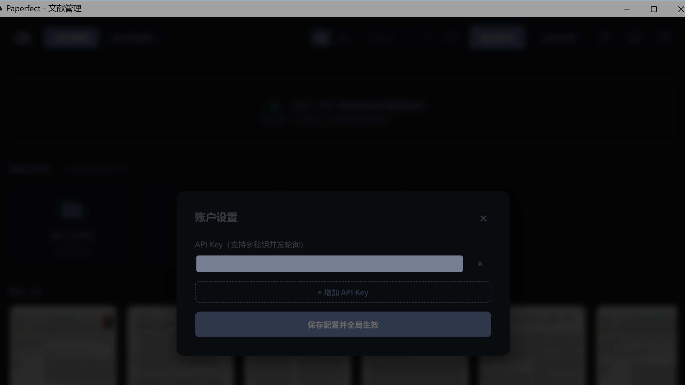
图 3 右上角齿轮打开「账户设置」。API 地址与所用模型由 Paperfect 官方统一预配置并锁定，界面不再提供修改入口；您只需要填写自己的 API Key。说明书配图中已对密钥打码。
在主界面右上角点击齿轮图标 （提示：账户设置）。
在「API Key」输入框中粘贴您的密钥。需要分担并发压力时，点击「+ 增加 API Key」添加多把密钥，系统会自动轮询使用。
点击「保存配置并全局生效」。成功后弹窗会提示「配置已保存！」。
为什么看不到 API 地址 / 模型名称输入框
Paperfect 作为商用交付软件，API 服务地址与所用大模型均已由官方预先配置并写入程序、不可在界面中更改，确保每位用户获得一致的解析质量与稳定性。您只需要提供自己的 API Key；一次填写后会同步用于：文献解析、对话问答、论文处理、批注生成、翻译，无需分别配置。
密钥安全
API Key 仅保存在本机配置文件中，不会打进安装包、也不会上传到 Paperfect 服务器。请不要把密钥截图发到公共群组。更换密钥后重新打开账户设置并保存即可。
CHAPTER 04 认识主界面启动后默认进入「资料管理」。顶部是全局工具栏，中部是上传区与文件夹，底部是最近文献封面。界面语言可在右上角「中 / EN」之间切换，配色可在浅色与夜间模式之间切换。
图 4 资料管理首页。左：Cyan Light 浅色；右：Neon 夜间。语言可在右上角「中 / EN」切换，分区不变。
4.1 顶栏按钮一览
位置 中文名称 英文名称 作用
左 Logo — 返回资料管理首页。 左 资料管理 / 提示词管理 Library / Prompts 在文库与提示词编辑器之间切换。 右 中 / EN 中 / EN 界面语言。选择会记住，下次启动沿用。 右 主题下拉框 Theme Neon、Dark+、Cyan Light 三套配色。 右 昼夜按钮 Moon / Sun 在浅色与深色主题间快速切换。 右 我的资料 My Files 封面卡片式文库，日常入口。 右 自动分类 Auto Classify 带标签与分区筛选的文献列表。 右 扳手图标 · 工具箱 Toolbox PDF 转换/合并/压缩/加密等独立小工具，可直接拖拽本机 PDF 处理，无需先导入文献库。 右 齿轮 Settings 账户设置（填写 API Key）。
CHAPTER 05 上传文献并启动智能处理把 PDF 拖进虚线框，或点击虚线框选择文件。随后弹出「上传文献」对话框，确认后开始后台流水线。
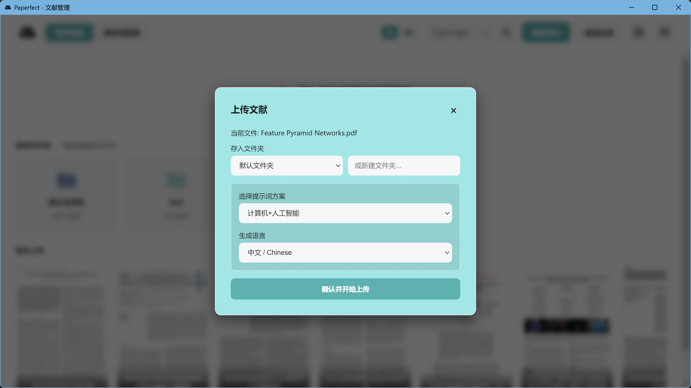
图 5 上传对话框。可指定存入文件夹、解析所用提示词方案，以及生成语言（中文 / 英文）。
准备一份学术论文 PDF。扫描件、纯图片 PDF 也能处理，但耗时更长。
拖入或点选文件。对话框会显示「当前文件: 文件名.pdf」。
存入文件夹 ：从下拉框选择已有文件夹，或在右侧输入新名称当场新建。提示词方案 ：决定解析时关注哪些问题。内置如「计算机+人工智能」「默认提示词」。可在「提示词管理」中自建。生成语言 ：中文或英文。选择英文时，系统会跳过「译成中文」步骤，翻译视图沿用原文。点击「确认并开始上传」。对话框关闭，卡片上出现进度。
5.1 处理过程中您会看到什么
文献封面底部会出现半透明进度条，并轮换显示阶段名称与百分比，例如：
阶段文案 系统在做什么 大致比重
初始化 建立文献目录、缓存与任务。 起始 解析文献 分页理解、抽取结构、生成知识库 Markdown。 约 40% 翻译文献 生成尽量保持版式的翻译 PDF（目标语言为英文时跳过）。 约 10% 生成PPT 根据解析结果与配图生成演示文稿。 约 25% 生成批注 在原文上写入四色标注与便签。 约 25% 收尾 整理产物，卡片变为可打开状态。 结束
解析与翻译会并行 ；PPT 与批注在解析完成后并行。因此进度条上的阶段名称可能交替出现，这是正常现象。
中途断开怎么办
同一文件已完成的步骤会被跳过。若卡片停在处理中或出现失败提示，点击绿色按钮 重试继续 ，不要删除后重传（除非您想彻底重做）。长论文可能需要数十分钟，请保持网络畅通、不要强制结束进程。
何时可以打开
处理尚未全部结束时，只要已生成可用的知识库、翻译件或批注之一，卡片也可能允许提前进入阅读。未完成的视图（如 PPT）打开后可能仍是空的，等进度到 100% 再刷新即可。
CHAPTER 06 管理文件夹与文献卡片6.1 文件夹
点击「新建文件夹」卡片，输入名称后创建。
把文献卡片拖到 目标文件夹上，即可归档。
点击文件夹进入内部网格。面包屑「全部文件夹 / 当前名称」可返回。
文件夹右上角「⋯」：重命名，或删除文件夹（文件不会被删除 ，只是移出该文件夹）。
6.2 文献卡片
封面一般为 PDF 首页缩略图，底部显示标题。
处理完成后，单击封面进入阅读工作区。
鼠标悬停后右上角出现删除按钮。删除是永久且不可恢复 的，请谨慎确认。
CHAPTER 07 工具箱：独立 PDF 工具除了对文献库里的论文做智能解析，Paperfect 还内置了一套独立的 PDF 小工具，专门处理"跟研究无关，但天天都要用"的杂事——转格式、拆页、压缩、加水印、加密解密等。它们不需要先把文件导入文献库，任意一份本机 PDF 拖进来就能直接处理，用完即弹出结果，不留痕迹。
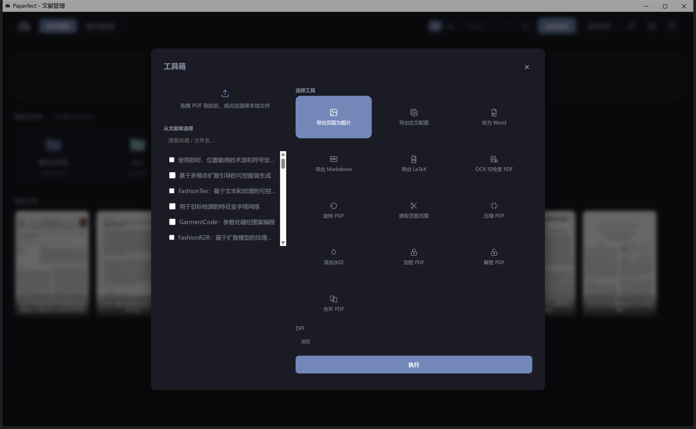
图 6 工具箱。左侧可以拖拽本机 PDF、点击选择本地文件，或直接从文献库勾选已入库的论文；右侧是工具卡片网格，点选后填参数、点「执行」即可下载结果。
7.1 打开方式
在顶栏点击扳手图标 （工具箱）即可打开。它是一个独立的浮层，不会影响文献库和阅读器里已经打开的内容。
7.2 左侧：喂给工具的 PDF 从哪来
拖拽 / 点击上传 ：把 PDF 从桌面拖进虚线框，或点击虚线框打开文件资源管理器选择。支持一次选多个文件。这些文件只是临时存放，不会进入文献库的"我的资料"列表。从文献库选择 ：在搜索框输入标题或文件名关键词，勾选下方列表中的条目即可。可以和上传的本机文件混合勾选，一起批量处理。
7.3 右侧：可用的工具
工具 作用
导出页面为图片 把每一页导出成 PNG 图片（可设置 DPI），适合截图分享单页内容。 导出论文配图 只提取文中的图表（Figure），跳过正文版式，方便整理素材。 转为 Word 转换为可编辑的 .docx，尽量还原原始版式。 导出 Markdown 转换为 Markdown 文本，适合粘进笔记软件或再次用 AI 处理。 导出 LaTeX 转换为 LaTeX 源码，适合需要二次排版或投稿修改的场景。 OCR 可检索 PDF 为扫描件/图片型 PDF 加上可选中、可搜索的文字层。 旋转 PDF 整体旋转 90°/180°/270°，修正扫描时装订方向不对的文件。 提取页面范围 按页码区间拆出一份新 PDF，例如只留第 3–8 页。 压缩 PDF 降低图片分辨率与体积，方便邮件发送或上传附件大小受限的系统。 添加水印 叠加文字水印（如姓名、日期），用于内部分享与版权提示。 加密 PDF 设置打开密码，保护敏感文献。 解密 PDF 已知密码时移除 PDF 的打开限制。 合并 PDF 把多份 PDF（含上传与库内选中的）按顺序拼接成一份。
选中工具后，若该工具需要参数（如导出 DPI、旋转角度、拆分页码范围、密码），会在下方出现对应输入框。填好后点击「执行」，处理完成会在下方给出下载链接。
合并 PDF 需要几份文件
「合并 PDF」至少要在左侧勾选两份及以上文件才能执行；其余工具一次只处理一份，若同时勾了多份，会按顺序逐一处理并分别给出结果。
CHAPTER 08 浏览器式标签阅读：分组与自动休眠同时精读好几篇论文时，Paperfect 的阅读器会像浏览器一样，把每篇文献变成顶部的一个标签页——不用来回切换窗口，也不必把很多份 PDF 摆得满屏都是。
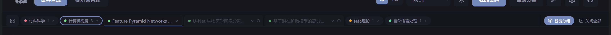
图 7 标签页栏。最左侧固定着「返回我的资料」；中间是可以自由增减的标签，开启智能分组后会按研究领域折叠成彩色分组标签；最右侧固定着「智能分组」与「关闭全部」，不会被中间的标签挤出屏幕。
8.1 标签页的基本操作
在文献库或自动分类列表中点击任意一篇文献，会在顶部新增（或激活已有的）一个标签页，并进入该文献的阅读工作区。
标签页多到放不下时，每个标签会自动变窄 （只留省略号标题），而不是把标签栏撑爆或出现横向滚动条——这一点和浏览器标签页完全一致。
标签右侧的 × 关闭当前这一篇；点击最左侧的方格图标可随时回到「我的资料」首页，标签页仍会保留在顶部，方便随时切回。
标签之间可以直接拖拽排序 ；把一个标签拖到另一个标签的正中间会把两者合并为一组 （同色小圆点标记），拖到边缘则只是调整顺序。
8.2 智能分组
点击标签栏最右侧的「智能分组」，Paperfect 会按每篇文献识别出的研究领域，把标签折叠成一个个彩色分组标签（例如「计算机视觉 · 3」），而不是按更细的子方向拆成一堆零碎分组。
点击分组标签可以展开 / 折叠该组；正在阅读的那一篇所在的分组会自动展开，不会被意外收起。
关闭智能分组后，标签恢复为手动拖拽排序/合并的普通模式。
再次点击「智能分组」按钮可随时关闭。
8.3 右键菜单
在任意标签上单击右键，会弹出快捷菜单：
关闭标签 ：只关闭这一个。关闭其他 ：只保留当前这一个，关掉其余全部。关闭右侧 ：关闭该标签右边的所有标签，左边保留。取消编组 ：仅当该标签处于手动合并分组中时出现，点击后把它从分组里拆出来。全部关闭 ：清空所有标签页，回到资料管理首页。
8.4 自动休眠
为什么要休眠
每个标签背后都是一份完整的 PDF/批注/PPT 渲染，标签开多了会占用不少内存。参考浏览器的做法：一个标签如果连续 10 分钟 不是当前正在看的那个，就会被自动"休眠"（标题变暗淡，内容先卸载）；重新点击它时会自动唤醒并恢复原来的阅读状态，只是需要重新加载一下内容。
切换到某个标签、或它本身就是当前激活的标签时不会被休眠。退出软件时打开的标签会被记住，下次启动会自动恢复到相同的标签组合（默认全部以休眠状态出现，只有上次正在看的那一篇会直接唤醒），不需要重新一个个打开。
CHAPTER 09 进入协同阅读工作区单击已完成的文献，进入多视窗工作区。最典型的用法是：左边继续读带批注的论文，右边对着同一页的幻灯片看图——也就是把「左手论文、右手 PPT」的组会习惯，放进同一个窗口。
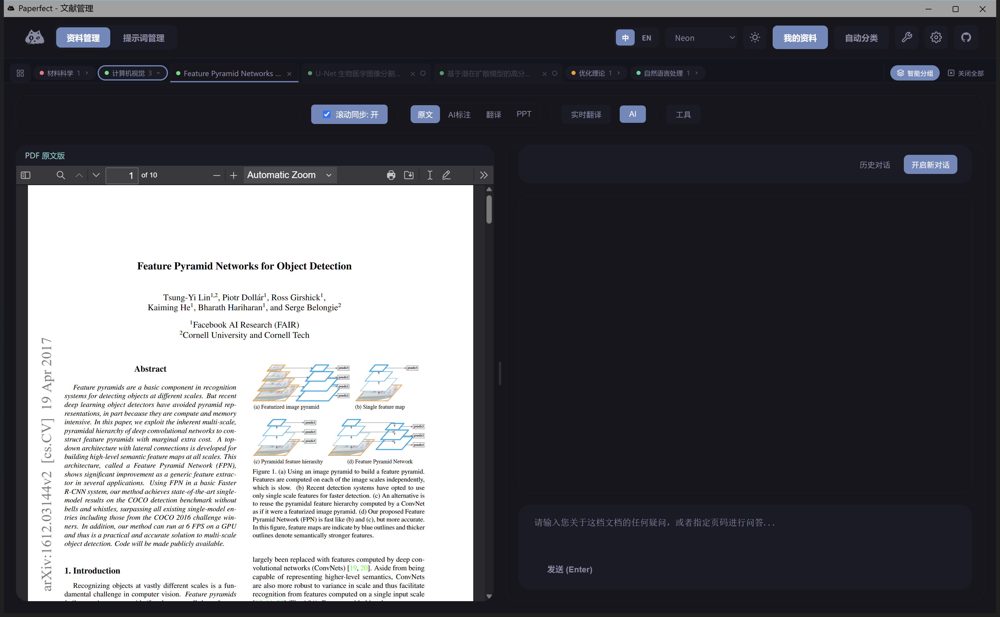
图 8 阅读工作区整体结构：最上一行是第 8 章介绍的标签页栏；下面一行是本篇文献的工具条，按钮全部是纯文字（不再叠加图标），保持简洁；再下面是可自由拼装的分栏，此处示例打开了「原文 + AI」。
9.1 工具条按钮
按钮 打开的内容 建议用法
返回主页 回到资料管理 随时退出当前文献（嵌入标签页阅读器时此按钮会隐藏，改用标签栏最左侧的图标返回）。 滚动同步 PDF ↔ PPT 页面对齐 对照阅读时保持开启；精细比页时可暂时关闭。 原文 原始 PDF 核对措辞、公式、参考文献。 AI标注 带四色批注的 PDF 快速抓住贡献与方法，详见第 10 章。 翻译 版式保留的翻译 PDF 与原文并排，对照长难句。 PPT 内置幻灯片编辑器 看图解、改标注、准备组会汇报。 实时翻译 划词翻译面板 只译当前选中的一小段。 AI 基于本文的对话 提问、归纳、指定页码讨论。 工具 下拉出该文献专属的工具面板 见下方 9.2 小节。
自由拼装分屏
按钮可多选。例如同时打开「原文 + 翻译 + AI」，或「原文 + PPT」。中间的竖条可左右拖动，改变各栏宽度。视窗标题栏提供最大化、脱离容器置顶，适合接到第二块显示器。
9.2 工具下拉：只处理当前这一篇
顶栏最右侧的「工具」按钮会展开一个下拉面板，里面是第 7 章「工具箱」的同一批小工具（导出图片、抽取配图、转 Word / Markdown / LaTeX、OCR、旋转、拆分、压缩、加水印、加密、解密），但自动锁定为当前正在阅读的这篇文献 ，不用再手动选文件；面板顶部还能直接调整「导出 DPI」。跟第 7 章的独立工具箱相比，区别只是"要不要预先选文件"——处理同一篇论文时，这里更快。
CHAPTER 10 从纸质批注到软件四色标注精读论文时，很多人会在纸上做四件事：用荧光笔标贡献、用红笔划问题、用蓝笔标方法名词、在页边贴一张写着「这段在说什么」的便签。Paperfect 没有发明另一套符号，而是把这套纸质流程原样迁进 PDF：颜色语义不变，由 AI 完成第一遍标注，您只负责核对与取舍。
图 9 同一套阅读动作：左边是纸面高亮、波浪线、下划线与便利贴；右边是软件把同样的四种语义写回 PDF，并在页边给出说明卡片。
10.1 四种颜色分别代表什么
红色波浪线 · 局限与挑战
前人工作的不足、尚未解决的问题、本文要面对的困难。读引言与 Related Work 时优先扫这些位置。
黄色高亮 · 核心创新
本文贡献、关键动机、声称解决了什么。适合写笔记、做组会开场。
蓝色下划线 · 方法与指标
网络模块名、数据集、评测指标、关键超参等客观事实。写复现笔记时对着蓝线抄。
绿色便签 · 段落大意
挂在段首或架构说明旁的短总结。扫一眼就能决定这一段要不要精读。
10.2 在阅读工作区里怎么用
打开文献后点击顶栏「AI标注」。批注已经写在 PDF 里，可以缩放、换页，也可以和「PPT」（见第 11 章）并排对照。绿点/绿便签通常表示该段有一句总括；黄块是贡献；红波浪是问题；蓝线是方法事实。
建议读法（对照纸质习惯）
先像扫纸质抽印本一样：只看黄和绿，用 3 分钟抓住「这篇做了什么」。再回头看红，理解它针对谁的不足。最后对着蓝线记模块名与指标。需要讲图时打开右侧 PPT，不必再另开 PowerPoint。
标注是辅助，不是结论
颜色由模型根据解析报告定位原文短语生成，偶有漏标或错标。涉及引用、数值与“本文是否真的创新”，请回到原文核对。若提示「尚未生成 AI 批注」，请等待任务完成或点击「重试继续」。
CHAPTER 11 PPT 视窗与双向同步打开「PPT」后，右侧（或您放置的那一栏）载入该文献的演示文稿。幻灯片来自论文流水线，可在画布上继续标注。
11.1 与 PDF 对读
同时打开「原文」（或翻译）与「PPT」，并保持「滚动同步: 开」。
在 PPT 中翻到下一张：PDF 会滚到该页对应的论文页。
在 PDF 中滚动换页：PPT 会跟到映射的那一张幻灯片。
需要单独精读某一页时，取消勾选滚动同步，避免两边抢焦点。
11.2 编辑工具栏
分组 功能 说明
翻页 首张 / 上一张 / 页码 / 下一张 / 末张 也可用键盘左右方向键。 工具 选择移动（V）、箭头连线（A）、文本（T） 在图上画指示线、加注释文字。 历史 撤销、重做、复制、删除 见下方快捷键。 颜色 色点 作用于当前选中的文字或线条。 字号 / 线宽 加减按钮 调节选中对象。 缩放 缩小 / 百分比 / 放大 只改变显示比例，不改变幻灯片内容尺寸。
常用快捷键：← → 翻页 · V 选择 · A 箭头 · T 文本 · Ctrl +Z 撤销 · Ctrl +Y 重做 · Ctrl +D 复制选中。
CHAPTER 12 AI 伴读问答打开「AI」后，在输入框提问并按 Enter 发送；问答基于当前这篇文献 的解析结果。可指定页码或图表编号，「开启新对话」换话题，「历史对话」查看或删除旧记录。关键数字请对照原文。
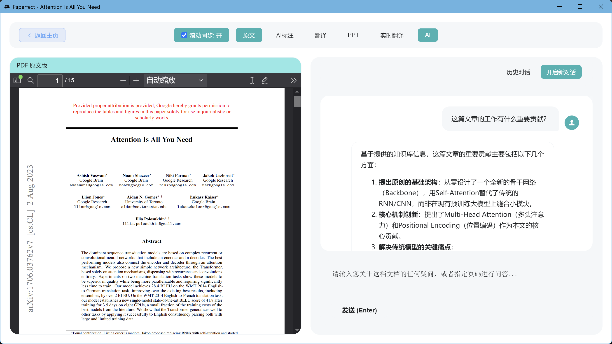
图 10 「原文」+「AI」：可问贡献、方法、指定页码。
CHAPTER 13 划词实时翻译打开「实时翻译」，在 PDF 中划选文字（也可手改），点「翻译」即可。需要放到第二块屏幕时用「脱离容器并置顶」，结束后「嵌入网页」收回。整篇通读请用「翻译」视窗。
CHAPTER 14 自动分类、论文脉络与万能搜索在资料管理页顶部有三个并列入口：「分类」「论文脉络」「万能搜索」。它们共享同一份已解析的文献库，分别对应"列表筛选""单篇深度摘要""跨文献自然语言问答"三种查资料的方式。
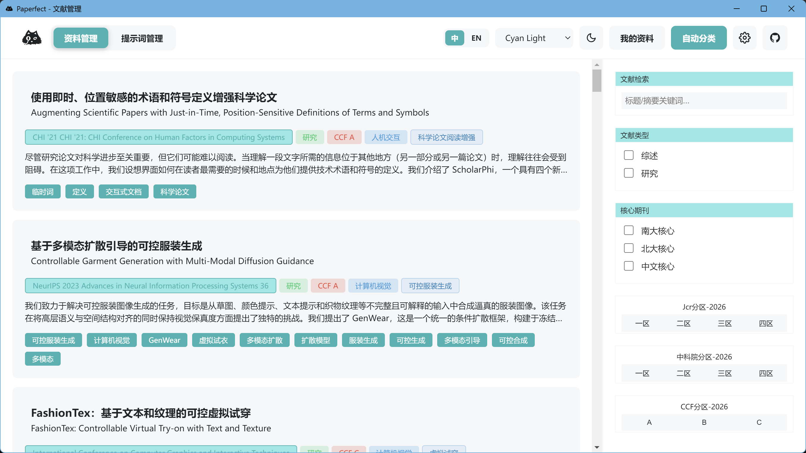
图 11 「分类」标签页。中间是文献条目（标题、分区标签、摘要、关键词），右侧用类型、核心期刊、JCR / 中科院 / CCF 分区缩小范围。
14.1 「分类」里能看到什么
中英文标题（若已生成中文题名）。
会议或期刊名、文献类型（综述 / 研究）、CCF / JCR / 中科院分区、研究领域。
摘要摘录与关键词标签。
单击条目即可进入该文献的阅读工作区。
14.2 右侧筛选器
文献检索 ：标题或摘要关键词。文献类型 ：综述 / 研究。核心期刊 ：南大核心、北大核心、中文核心。分区 ：JCR、中科院、CCF，各有一区至四区（或 A/B/C）按钮，再点一次可取消。
部分新导入文献在元数据尚未写完时，标题旁可能出现「待补全分类信息」；不影响先打开阅读，只是筛选标签会晚一点齐全。
14.3 「论文脉络」：一篇论文的深度摘要卡片
点击顶部「论文脉络」标签，再从左侧列表选中任意一篇文献，右侧会展开一整页 AI 生成的"论文档案"，帮助你在不打开 PDF 的情况下快速回忆或判断这篇文献是否值得细读。
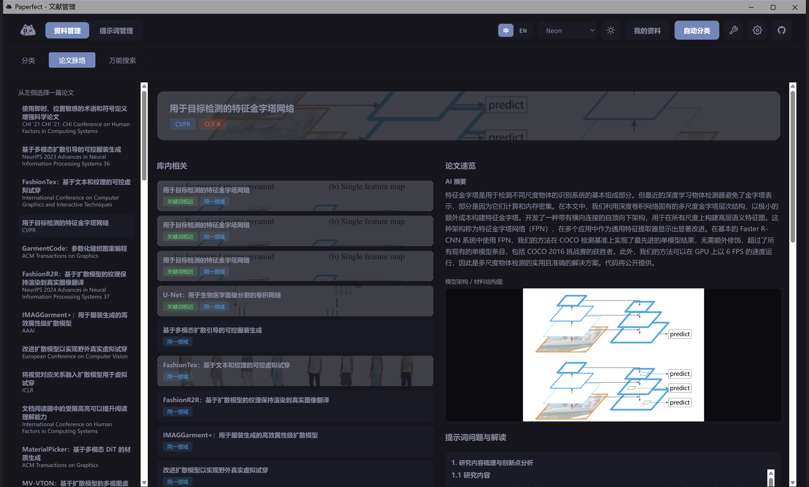
图 12 「论文脉络」页面结构：顶部横幅把该文献最具辨识度的配图做成半透明背景；横幅下方左侧是标题、期刊与 CCF 分区（彩色标签，不再是纯文本），右侧紧跟着 AI 摘要，不需要下滚就能看到；再往下是模型架构图/材料结构图（如论文含有）与逐条列出的处理提示词及 AI 回答；最右侧是「库内相关」推荐，用毛玻璃底图 + 彩色标签（"关键词相近"、"同一领域"分开显示）呈现。
标题横幅 ：自动挑选论文里最具辨识度的一张配图，做半透明处理后铺在标题下方，帮助建立"图 ↔ 文"的记忆关联；没有合适配图时横幅退化为纯色底。期刊 / CCF 标签 ：会议或期刊名称、CCF 等级各自是一个带颜色的小标签，一眼区分等级，不再和其他文字混排。AI 摘要 ：位于标题横幅右侧、页面顶部，不需要滚动即可读到。架构图 / 材料结构图 ：仅当论文中含有模型结构图或材料结构图时才会出现，图片下方保留完整图题，不再被截断。处理提示词与 AI 回答 ：导入时使用的分析提示词，以及 AI 针对每条提示词给出的回答，回答内容按 Markdown 渲染（标题、列表、加粗、代码块等都会正常显示，不再是一段纯文本）。库内相关 ：从文献库里找出与当前论文关键词相近或研究领域相同的其他文献，卡片带低透明度代表图作为背景，并用两个独立的彩色标签分别标出"关键词相近"与"同一领域"，点击卡片可直接跳转到那一篇。
14.4 「万能搜索」：用一句话问遍整个文献库
点击顶部「万能搜索」标签，在输入框里用自然语言描述你想找的内容（可以是主题词、方法名，也可以是一整句问题），按 Enter 提交。系统会现在文献库里检索相关文献，再交给 AI 归纳整理后作答，并在回答中标出引用了哪些文献。
提交后按钮区域会显示「AI 检索中」和一个加载动画，检索完成后自动替换成回答内容。
中文长词组（例如专业术语）也能被正确检索，无需刻意拆词或改用英文。
若一次检索耗时较久或库内暂无强相关结果，AI 会在回答里说明"未找到高度相关的文献"，而不是勉强给出无关内容。
CHAPTER 15 提示词管理顶栏切换到「提示词管理」。左侧是方案列表，右侧按「段落」编辑每一段指令。上传文献时选择的方案，会决定解析报告更关注什么。
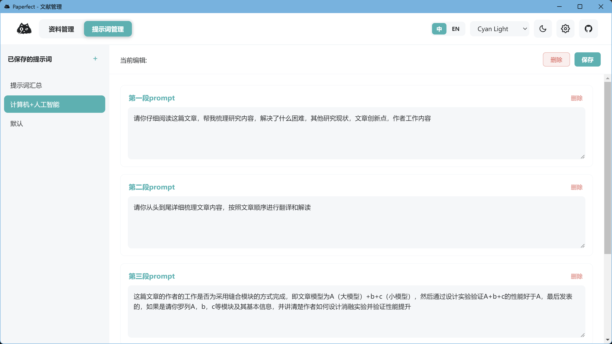
图 13 提示词管理。可按研究领域定制「要问这篇论文的哪几件事」，相当于把纸质精读清单写成可复用的解析步骤。
点「新建提示词」，输入方案名称，例如「生物医学综述」。
每个方案由若干段落组成：可改段落标题与正文，点「+ 添加新段落」。
编辑后务必点「保存」。删方案前会二次确认。
回到资料管理上传 PDF 时，在「选择提示词方案」下拉框中选中它。
什么时候该改提示词
默认方案面向通用论文梳理（背景、贡献、方法、局限）。若您固定精读某一领域，把领域术语、必须抽取的表格字段写进提示词，解析质量通常更稳。改方案只影响之后新上传 的文献，不会自动重跑旧文。
CHAPTER 16 主题、语言与个性化
Neon
默认深色。背景近黑，点缀雾蓝与青绿，适合长时间夜间阅读。
Dark+
接近常见代码编辑器的深色配色，对比更硬一些。
Cyan Light
浅色界面，顶栏为浅青。投影、打印截图时更清晰。PPT 画布始终保持白底。
语言切换立即作用于按钮与提示文案。主题与语言都保存在本机浏览器存储中，换电脑不会带走，但同一台电脑下次打开会记住。
CHAPTER 17 常见问题与故障排除
现象 可能原因 处理办法
双击后很久才出窗口
首次解压后端引擎
等待 1–2 分钟。不要连续多次启动。以后会快很多。
主界面空白，底栏提示脚本未加载
缓存或启动竞争
完全退出（托盘/后台进程一并结束）后重开。仍不行可重启电脑后再开一次。
上传后进度一直停住
API Key 无效、余额不足，或网络不通
打开账户设置核对 API Key 是否正确、是否有余额。确认网络可访问后点「重试继续」。
翻译版与原文几乎一样
生成语言选了英文，或翻译步骤失败被跳过
中文阅读请在上传时选「中文」。若选了中文仍无译文，检查翻译所用模型额度后重试。
AI 标注是空的
批注尚未完成或生成失败
等进度结束。点「重试继续」。确认模型具备足够上下文能力。
PPT 是空白画布
生成未完成，或上次生成文件过小被判定失败
等待或重试。确认 API 对 PPT 所用模型可用。
滚动同步乱跳
映射在个别图表页不够准
暂时关闭同步，手动对齐；这不影响阅读其它页。
卸载后文献还在 / 或找不到了
卸载默认保留 data
到原安装目录查找 data。重装到新路径时，请手动把旧 data 拷过去。
请避免的操作
处理过程中不要删除正在写入的文献文件夹；不要在任务进行时强制结束 Paperfect；不要把安装目录放在同步盘（网盘）里频繁冲突。这些都可能导致进度损坏，只能靠「重试继续」或重新上传恢复。
CHAPTER 18 附录：快捷键与处理产物18.1 推荐阅读路径（第一次用）
安装并启动 → 齿轮里填 API Key → 保存。
拖入一篇 8–20 页的会议论文，提示词选「计算机+人工智能」，语言选中文。
等待封面进度到 100%（可去干别的，不要关软件）。
打开文献：原文 + AI标注 并排，先扫黄高亮和绿便签。
打开 PPT，打开滚动同步，按幻灯片把图看懂。
用 AI 问：「这篇论文如果我复现，最少要准备哪些数据和指标？」
18.2 一篇论文在磁盘上会留下什么
每篇文献在本地工作空间中有独立目录（概念结构如下）。一般无需手工打开这些文件夹，软件会自动调用。
子目录 / 文件 含义
raw/ 您上传的原始 PDF parsed/ 结构化解析与知识库 Markdown，供问答使用 translated/ 翻译后的 PDF marked/ 带四色批注的 PDF 及批注数据 images/ 抽取出的配图 pptx/ 生成的演示文稿与页面对应关系 cache/ 中断后续传用的缓存，勿随意清空